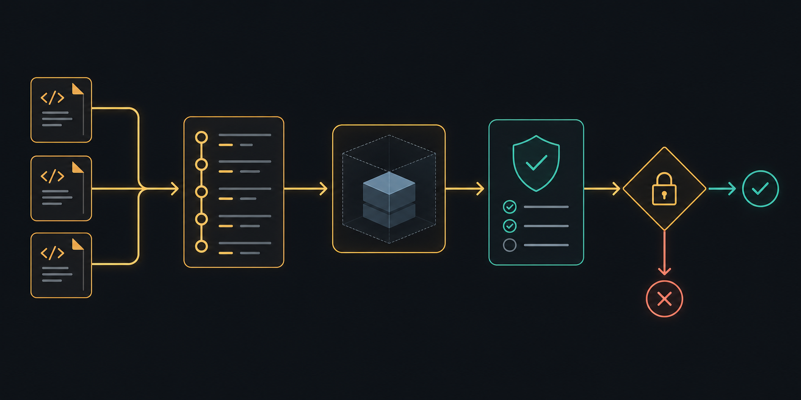
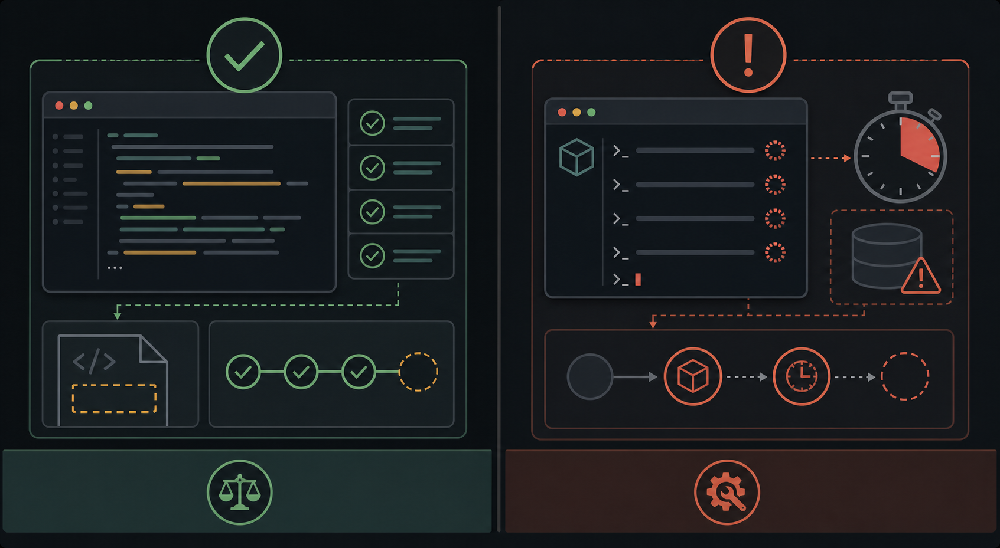
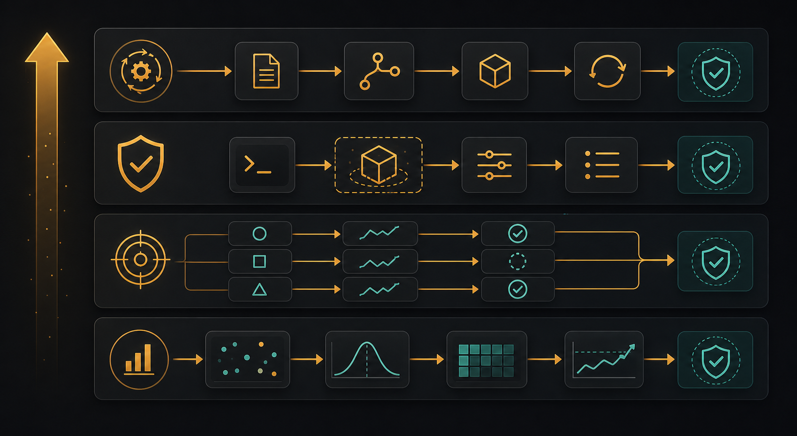

Fresh, sequential projects
The canonical eight-goal driver creates a new project per goal and sequences work within one process, reducing state leakage and local-model contention.

Turn Forge's recent harness work into a trustworthy measurement system. Preserve what already works well—fresh projects, durable launcher manifests, bounded execution, resource-contained sandboxes, deterministic evaluator tests, and a false-completion gate—while removing the paths that currently produce false greens, orphaned runs, unsafe verification, incomparable metrics, or misleading benchmark statistics.
The latest artifacts show real model capability, but they also prove that the current green count is not a reliable benchmark. The July 13 non-sandbox runs report three completions; independent goal-specific checks performed during this review accept only RPN, reject LRU, and cannot verify digits because the verifier runtime lacks sklearn. The sandbox rerun exposes important safety and tooling defects, then times out without terminating the detached child or closing its manifest.
| Artifact | Recorded result | What the evidence actually supports |
|---|---|---|
goal-2-2026-07-13.jsondigits, host-era path | completed, 435.79 s, 2 file changes, latest test success | Not verified. The log shows a generic Node contract passing after the agent wrote dataset metadata, not an experiment loop with reproduced accuracy > 0.95. The new contract returns error because its own runtime lacks sklearn. |
goal-3-2026-07-13.jsonLRU, host-era path | completed, 666.17 s, 2 file changes, latest test success | False green. The implementation still has get/put bodies containing pass. The new behavioral contract rejects 4 of 7 checks. |
goal-4-2026-07-13.jsonRPN, host-era path | completed, 846.33 s, 1 file change, latest test success | Behaviorally accepted. The current independent CLI battery reproduces all five expected results. |
goal-2-sandbox-2026-07-13.jsondigits, container path | timeout, 1802.59 s, goal active, 2 file changes, latest test success | The sandbox correctly prevented host execution, but the run repeated PEP 668 failures, mangled a legitimate python3 -c argv token into shell syntax, then experienced 120 s Docker command timeouts. The suite did not terminate the child; its manifest remained running. |
goal-suite-...-rerun[-2].json | 8/8 inconsistent in about 43.6 s | The harness detected disagreement, which is valuable, but its equality rule is wrong: a run may be blocked while its durable goal correctly remains active. That legal pair must not be classified as corruption. |
pi-tool-bench-2026-07-12.json | Tool calls measured at roughly 2–20 ms; no turn durations | Useful provisional evidence that tool execution is cheap, but the run listened for an obsolete terminal event and the p95 formula can report a value below the median for two samples. The end-to-end claim is withdrawn until a corrected rerun. |
The canonical eight-goal driver creates a new project per goal and sequences work within one process, reducing state leakage and local-model contention.
goal_suite_tui.py uses the real detached launcher path, giving each run a run ID, manifest, log, process group, and control-plane visibility.
Missing backends become skips, false completion is intended to hard-fail the gate, and lifecycle disagreement is surfaced instead of silently greened.
The default container is non-root, capability-dropped, no-new-privileges, volume-backed, and resource limited. This is the right execution boundary to strengthen.
The uncommitted evals/acceptance.py adds goal-specific, artifact-aware checks and already catches the recorded LRU false green.
The current acceptance, manifest, TUI, runtime-snapshot, command, and sandbox slice passes 65 tests with 4 Docker-gated skips; Ruff is clean on the reviewed files.

| Priority | Bug | Concrete impact | Required correction |
|---|---|---|---|
| P0 | Generic auditor contracts can certify the wrong deliverable. | Digits and LRU were marked complete while the actual goal behavior was absent. | Make goal-specific acceptance the only benchmark pass authority; retain the in-loop contract as progress evidence, not final truth. |
| P0 | Acceptance currently executes untrusted agent code with host subprocess.run. | Copying to a temp directory does not create a security boundary. | Run every acceptance command inside a separate no-network, resource-limited verifier container; fail closed on the claim if that verifier is unavailable. |
| P0 | TUI suite timeout does not stop the detached process. | Orphan work continues, manifests remain running, later runs contend for the same local model and Docker daemon. | Centralize process-group termination with TERM, bounded wait, KILL escalation, and an atomic terminal manifest update. |
| P0 | Acceptance reads the host mirror while container mode owns the real workspace. | The sandbox digits host directory contains only Git metadata, so the harness can call a real artifact unverifiable or inspect stale bytes. | Freeze and export an immutable snapshot from the authoritative Workspace after terminalization, including timeout paths. |
| P1 | Terminal consistency is defined as string equality. | blocked run + active goal becomes inconsistent even though that is the expected resumable state. | Use a documented legal state-pair matrix; only impossible pairs are inconsistent. |
| P1 | Argv and shell semantics are conflated. | A semicolon inside the single python3 -c argument triggers shell routing and loses quoting. | Introduce an explicit command kind and quote non-operator argv tokens; embedded metacharacters remain data. |
| P1 | Dependency setup is non-deterministic. | The model retries system pip install under PEP 668; the independent digits verifier also lacks sklearn. | Preflight and pin canonical suite dependencies in the sandbox/verifier image; normalize simple install requests to install_deps. |
| P1 | Sequentiality is only intra-process. | Three July 13 launcher runs overlapped across processes, invalidating latency and increasing Docker/model pressure. | Add a global evaluation lease plus stale-manifest reconciliation before launch. |
| P1 | Core metrics are placeholders. | turns_used is always null; runner cycles, D-AUC, and token cost default to zero, which can look artificially optimal. | Populate from durable events/sessions or store null with a reason; the gate must reject missing comparison metrics. |
| P1 | Result files lack comparability metadata and are written only at suite end. | Legacy, host, sandbox, acceptance-v1/v2, dirty-tree, and provider variants can be compared as if equivalent; crashes lose partial results. | Version the schema, hash contracts/config, record run IDs and environment fingerprints, and checkpoint atomically after every goal. |
| P2 | Pi benchmark protocol/statistics are under-validated. | Wrong terminal event erased turn time; nearest-rank p95 is wrong for small samples; scenario success is not proven. | Pin protocol fixtures, validate final side effects/tool identity, fix quantiles, retain raw events/errors, and mark aborted scenarios invalid. |
| P2 | Two live suite drivers and one manifest runner are drifting. | Provider setup, timeout behavior, lifecycle tracking, and result shapes differ across goal_suite.py, goal_suite_tui.py, and runner.py. | Keep one canonical orchestration service and make each CLI a thin adapter. |
Build a versioned evidence pipeline around the existing launcher and sandbox. One orchestration service acquires an evaluation lease, performs deterministic preflight, launches a run, owns its total budget, terminates it cleanly, exports the authoritative container snapshot, executes a goal-specific contract in a second verifier container, and atomically records a schema-validated result. The gate compares only compatible evidence and refuses missing metrics. The Pi benchmark follows the same evidence rules: validated protocol, validated scenarios, raw measurements, and no claim from aborted turns.

evals/goal_suite.py — goal catalog, current subprocess runner, report aggregation, and acceptance reconciliation.evals/goal_suite_tui.py — real detached-launcher suite path; should become the canonical CLI adapter.evals/runner.py — manifest-suite adapter; currently emits placeholder convergence/cost metrics.evals/acceptance.py — uncommitted behavioral contracts; preserve the contract batteries while replacing host execution.evals/gate.py — result comparator and false-completion hard gate.pge_launcher.py — launch manifest, process group, lifecycle persistence; natural home for shared termination/reconciliation.run_pge.py and engine/src/graph.py — per-batch turn budget and final lifecycle updates.forge_runtime/sandbox.py — authoritative workspace, resource controls, snapshot export seam, and verifier-container primitives.forge_runtime/tools.py and engine/src/nodes/executor_node.py — typed tool boundary and argv/shell normalization.docker/sandbox/Dockerfile — pin the canonical suite/verifier runtime, including sklearn/numpy.control_plane/runtime_snapshot.py — stale process reconciliation and DB-outage visibility.scripts/pi_tool_bench.py and docs/PI_TOOL_BENCHMARK.md — Pi protocol measurement and its provisional conclusion.tests/test_acceptance_contracts.py, tests/test_goal_suite_tui.py, tests/test_manifest_contracts.py, tests/test_runtime_snapshot.py, tests/regression/test_run_command_shell.py, tests/regression/test_sandbox.py — current focused regression suite.evals/contracts.py — Pydantic result schema, verdict enums, legal lifecycle matrix, and comparability fingerprint.evals/orchestrator.py — shared preflight, evaluation lease, launch/stop/snapshot/verify/checkpoint workflow used by all CLIs.evals/preflight.py — read-only DB, model endpoint, Docker image, runtime, disk, and active-run checks.evals/fixtures/recorded_failures/ — minimal LRU/digits/command/lifecycle fixtures derived from the July 13 artifacts, with no private data.tests/test_eval_orchestrator.py — timeout termination, partial checkpoint, legal state pairs, lease behavior, and snapshot authority.tests/test_eval_result_schema.py — legacy quarantine, required metadata, null-metric rejection, and comparability.tests/test_pi_tool_bench.py — Pi 0.80.2 event fixtures, scenario validation, quantiles, aborts, and raw-event retention.evals/results/baseline-v2.json — generated only after the full acceptance-v2 qualification run; never hand-authored.IMPORTANT: Execute every phase and task in order. Do not run a new full eight-goal suite until Phases 1–5 are green; otherwise the expensive run will generate evidence that still cannot be trusted.
Status markers: [] idle · [wip] in progress · [x] complete · [f] failed.
[] Phase 1: Version the Evidence ContractMake it impossible to compare unlike runs or reward unmeasured values. This phase changes data contracts only; no live model run is needed.
[] Add schema_version="2", suite/contract hash, Git SHA, dirty-diff hash, model/provider/dialect, redacted endpoint identity, sandbox mode/image digest/resource limits, Python/Pi versions, start/end timestamps, and host architecture.[] Require run_id, project_id, launcher status, durable goal status, terminal reason, acceptance verdict, infrastructure verdict, snapshot digest, and per-goal error/evidence tails.[] Store unmeasured cycles, turns, D-AUC, tokens, and cost as null plus measurement_unavailable_reason; never default them to zero.[] Define verdicts mechanically: verified, complete_unverified, blocked, timeout, runtime_error, harness_error, skipped. Only verified counts as completion.[] Parse old JSON read-only and label it legacy_uncomparable; do not rewrite the recorded files.[] Make the gate require matching schema, suite hash, contract hash, model/provider, sandbox image digest, and budget before calculating deltas.[] Write every result via temp file + os.replace after each goal so interruption retains a valid partial report.Use canned V1/V2 results. Include missing fields, null metrics, different contract hashes, a dirty-tree candidate, truncated JSON, and interrupted partial suites.
[]PYTEST_DISABLE_PLUGIN_AUTOLOAD=1 uv run --extra dev python -m pytest -q -o addopts='' tests/test_eval_result_schema.py tests/regression/test_self_improvement_gate.py — schema and comparison rules are deterministic.[]uv run --extra dev ruff check evals/contracts.py evals/gate.py tests/test_eval_result_schema.py — result contract code is lint clean.[] Phase 2: Own the Full Run LifecycleOne orchestrator must own launch, total budget, termination, snapshot, and final status. A suite timeout must never leave work running.
[] Check Postgres connectivity/schema, Docker daemon, sandbox image digest, model endpoint/model identity, free disk, verifier runtimes, and required canonical dependencies before launch.[] Reconcile stale manifests by checking process liveness; record the reconciliation event rather than silently editing history.[] Acquire an OS-level fcntl.flock evaluation lease under FORGE_HOME, recording owner PID/start time. Refuse concurrent suites; do not rely on Postgres being healthy to enforce the lock.[] Add terminate_run(project_id, run_id, reason, grace_seconds) in pge_launcher.py: signal the process group with SIGTERM, poll, escalate to SIGKILL, then atomically persist finished_at, exit state, and terminal reason.[] Reuse that function from the control-plane stop endpoint and every eval timeout/error path.[] Replace exact status equality with a legal matrix. In particular, blocked|timeout|stopped + durable goal active is resumable and valid; completed + goal active is inconsistent.[] Track a cumulative per-goal turn/batch/wall-clock budget across graph batches. Do not reset the effective max-turn budget when run_pge reloads durable state.[] Move shared logic into evals/orchestrator.py; keep goal_suite_tui.py, goal_suite.py, and runner.py as thin goal-catalog/CLI adapters.[] Pass provider configuration as a child environment map; do not mutate or persist the user's provider files. Detect dialect from the selected endpoint instead of forcing openai.Use fake child processes and temporary manifests. Test normal completion, startup failure, timeout, TERM ignored then KILL, already-dead PID, stale PID, concurrent lease, DB-down preflight, and each legal/illegal status pair.
[]PYTEST_DISABLE_PLUGIN_AUTOLOAD=1 uv run --extra dev python -m pytest -q -o addopts='' tests/test_eval_orchestrator.py tests/test_goal_suite_tui.py tests/test_runtime_snapshot.py tests/regression/test_launcher_lifecycle.py — lifecycle is bounded and observable.[]uv run --extra dev ruff check evals/orchestrator.py evals/preflight.py pge_launcher.py control_plane/api.py — lifecycle changes are lint clean.[] Phase 3: Make Sandbox Tooling DeterministicPreserve the strong container boundary while removing the argument, dependency, and daemon-health loops exposed by the sandbox digits run.
[] Normalize model output into an explicit internal CommandSpec(kind="argv"|"shell"). A list remains argv; a string is shell.[] Treat only standalone operator tokens (&&, ||, |, redirects) as a malformed shell-packed list. Quote every non-operator token when converting it. A semicolon inside python3 -c "..." remains data.[] Route all execution through Workspace.run; remove duplicate host/shell subprocess branches from the executor.[] Pin numpy/scikit-learn in the sandbox/verifier image used by the canonical suite, and record its digest in every result.[] Translate only simple, allowlisted pip install PACKAGE... requests into install_deps; reject unsupported flags with a precise message. Do not execute system-pip mutation.[] Detect repeated identical tool failures by normalized action + error class. After two repeats, inject the deterministic recovery instruction or block honestly; do not spend the entire goal budget on PEP 668.[] Classify Docker command timeout/daemon unresponsiveness as infrastructure failure, capture container resource state when possible, terminate the run, and prevent the next goal from starting until preflight is healthy.[] Add a read-only export_snapshot() method to Workspace that stages an immutable copy without overwriting the project's host mirror.[] Export only after the child is terminal; strip .git, internal probes, caches, and dependency directories; calculate a content digest.Pin the exact July 13 command shapes: Python -c with semicolon, argv with standalone &&, shell string, malformed empty command, PEP 668 repeat, Docker timeout, and export after forced termination.
[]PYTEST_DISABLE_PLUGIN_AUTOLOAD=1 uv run --extra dev python -m pytest -q -o addopts='' tests/regression/test_run_command_shell.py tests/regression/test_sandbox.py tests/test_eval_orchestrator.py — command semantics and failure handling are pinned.[]RUN_DOCKER_TESTS=1 PYTEST_DISABLE_PLUGIN_AUTOLOAD=1 uv run --extra dev python -m pytest -q -o addopts='' tests/regression/test_sandbox.py — real container behavior, limits, sync, and snapshot export pass.[]docker build -t forge-sandbox:eval-v2 -f docker/sandbox/Dockerfile . — the pinned canonical image builds.[] Phase 4: Make Acceptance Independent and SafeKeep the new behavioral batteries, but run them against the exported snapshot in a separate verifier container. The verifier must be independent of both the agent's own tests and the agent's mutable sandbox.
[] Refactor contract functions to accept a typed runner instead of calling host subprocess.run.[] Default to an ephemeral verifier container with --network none, non-root UID, cap-drop, no-new-privileges, read-only root, bounded memory/CPU/PIDs, writable tempfs, and a disposable snapshot volume.[] Never silently fall back to host execution. An explicitly enabled developer-only host mode must be labeled unsafe and may not produce a gateable benchmark result.[] Add recorded false-green fixtures: incomplete LRU, metadata-only digits, stale results.json, self-authored vacuous tests, and generic package.json success.[] Digits: remove stale output, rerun with pinned sklearn/numpy, require a numeric reproduced accuracy strictly above 0.95, and record the artifact digest/config.[] LRU/RPN/JSON/Dijkstra/tic-tac-toe/email/Snake: keep goal-specific behavioral batteries, add malformed/boundary cases, and distinguish artifact rejection from verifier infrastructure error.[] Hash the contract registry and injected drivers. Store the exact commands, exit codes, clipped stdout/stderr, and check results in the report.Every contract needs at least one known-good fixture, one plausible false-green fixture, and one missing-runtime/harness-error fixture. Tests must prove verifier commands never call the host subprocess seam.
[]PYTEST_DISABLE_PLUGIN_AUTOLOAD=1 uv run --extra dev python -m pytest -q -o addopts='' tests/test_acceptance_contracts.py tests/test_manifest_contracts.py — all contract batteries classify the fixture corpus correctly.[]RUN_DOCKER_TESTS=1 PYTEST_DISABLE_PLUGIN_AUTOLOAD=1 uv run --extra dev python -m pytest -q -o addopts='' tests/test_acceptance_contracts.py — independent verifier execution works in the real boundary.[]uv run --extra dev ruff check evals/acceptance.py tests/test_acceptance_contracts.py tests/test_manifest_contracts.py — verifier code is lint clean.accepted may map to benchmark completion.[] Phase 5: Populate Real Metrics and Harden the GateThe gate must compare real work under matching conditions. Missing data is a failure to measure, not a free improvement.
[] Persist and report total turns and batches across resumes, not only the final graph batch.[] Read convergence snapshots/test outcomes to compute cycles-to-done and D-AUC; include the formula and flaky-test weights in the suite hash.[] Aggregate input/output/cache/reasoning tokens and cost from session/model-call records when available. Otherwise emit null with a reason.[] Separate model time, tool time, verifier time, queue/lease wait, and infrastructure retry time.[] Require the same goal IDs, contract/config/image fingerprints, budgets, and replicate count.[] Hard-fail any false completion, harness error, missing goal, missing required metric, or candidate-only skip.[] Report model failures separately from harness failures; do not hide infrastructure instability inside blocked.[] For self-improvement comparisons, run paired baseline/candidate trials under the same environment and use at least three replicates for stochastic local-model results. Report median and spread; never gate on one lucky run.Canned reports cover null metrics, false completions, harness errors, incompatible images, unequal replicates, ties, regressions, and a valid paired improvement.
[]PYTEST_DISABLE_PLUGIN_AUTOLOAD=1 uv run --extra dev python -m pytest -q -o addopts='' tests/test_eval_result_schema.py tests/regression/test_self_improvement_gate.py tests/test_manifest_contracts.py — metrics and gate cannot be gamed by missing data.[]uv run --extra dev python evals/gate.py --candidate evals/results/sample-v2.json --baseline evals/results/sample-v2.json — a valid identity comparison passes.[] Phase 6: Repair and Extend the Pi Tool BenchmarkPreserve the useful finding that built-in tool execution is likely cheap, but regenerate it with a protocol-correct, scenario-valid harness.
[] Parse the pinned Pi 0.80.2 agent_start, tool_execution_start, tool_execution_end, and agent_end events from fixtures; unknown terminal protocols fail preflight.[] Capture stderr and invalid JSON lines; retain raw events with monotonic timestamps and pair every tool start/end by ID.[] Validate each scenario: expected tool identity/count, expected read/search targets, final edit file content, command success, exact final answer, and clean agent_end. An abort retains diagnostics but is excluded from latency claims.[] Replace the p95 index with nearest-rank ceil(0.95 * n) - 1; assert median <= p95 <= max.[] Add CLI options for timeout, runs, seed/temperature where supported, and output path. Write schema-versioned JSON atomically.[] Record Pi version, provider/model, scenario validity, sample counts, turn durations, tool share, and failure reasons.[]PYTEST_DISABLE_PLUGIN_AUTOLOAD=1 uv run --extra dev python -m pytest -q -o addopts='' tests/test_pi_tool_bench.py — event parsing, quantiles, abort handling, and scenario contracts pass.[]uv run --extra dev python scripts/pi_tool_bench.py --provider lmstudio --model google/gemma-4-12b-qat --runs 5 --output docs/pi-tool-bench-v2.json — at least five valid completed runs are captured.[] Update docs/PI_TOOL_BENCHMARK.md only from the generated V2 artifact. Keep the forge-tools decision provisional if completed turn evidence is still insufficient.[] Phase 7: Qualify the Harness and Establish Baseline V2Prove the repaired harness with cheap fixture gates first, then targeted live smokes, then one full sequential suite. Do not tune the model during qualification.
[] Run RPN as a known behaviorally accepted smoke; require verified acceptance from the exported container snapshot.[] Replay the recorded incomplete LRU fixture; require complete_unverified and false_completion=true.[] Run digits with the pinned image; require no PEP 668 loop, a usable verifier runtime, and a truthful accepted/rejected verdict.[] Force a short timeout; prove the process group is dead, manifest terminal, snapshot exported, lease released, and no stale running entry remains.[] Run all goals sequentially with no other active Forge/model benchmark. Checkpoint the report after every goal.[] Inspect every acceptance command and artifact digest; the suite is valid even if the model fails goals, provided every verdict is reproducible and no harness error remains.[] Generate evals/results/baseline-v2.json from the qualifying run. Record the verified completion rate as the baseline; do not copy the legacy 5/8 or 7/8 headline.Run the focused Python/Docker gates, the complete Python suite, Rust workspace tests, and the live smoke/full qualification in that order.
[]PYTEST_DISABLE_PLUGIN_AUTOLOAD=1 uv run --extra dev python -m pytest -q -o addopts='' tests/test_acceptance_contracts.py tests/test_goal_suite_tui.py tests/test_manifest_contracts.py tests/test_eval_orchestrator.py tests/test_eval_result_schema.py tests/test_pi_tool_bench.py tests/regression/test_run_command_shell.py tests/regression/test_sandbox.py — focused harness suite is green.[]PYTEST_DISABLE_PLUGIN_AUTOLOAD=1 uv run --extra dev python -m pytest -q -o addopts='' tests — full Python suite is green.[]uv run --extra dev ruff check . — repository lint is green.[]cargo test --workspace --manifest-path experimental/Cargo.toml — Rust TUI/control-plane consumers still honor the lifecycle/result contracts.[]uv run --extra dev python evals/goal_suite_tui.py --model google/gemma-4-12b-qat --base-url http://127.0.0.1:1234/v1 --output evals/results/baseline-v2.json — full live qualification produces V2 evidence.Execute these commands after all phases to validate the complete plan:
[]PYTEST_DISABLE_PLUGIN_AUTOLOAD=1 uv run --extra dev python -m pytest -q -o addopts='' tests — all Python contracts and regressions pass.[]RUN_DOCKER_TESTS=1 PYTEST_DISABLE_PLUGIN_AUTOLOAD=1 uv run --extra dev python -m pytest -q -o addopts='' tests/regression/test_sandbox.py tests/test_acceptance_contracts.py tests/test_eval_orchestrator.py — the real execution and verifier boundaries pass.[]uv run --extra dev ruff check . — lint passes without unrelated reformatting.[]cargo test --workspace --manifest-path experimental/Cargo.toml — Rust consumers pass.[]uv run --extra dev python evals/gate.py --candidate evals/results/baseline-v2.json --baseline evals/results/baseline-v2.json — the generated V2 baseline is self-consistent and gateable.[]uv run --extra dev python scripts/pi_tool_bench.py --provider lmstudio --model google/gemma-4-12b-qat --runs 5 --output docs/pi-tool-bench-v2.json — Pi benchmark V2 contains only valid scenarios.running manifest.blocked run + active goal is classified as resumable, while completed run + active goal is inconsistent.python3 -c "import sklearn; print(...)" executes with the code string intact.agent_end turns, scenario validity, raw sample counts, and explicit abort exclusions.| Risk | Mitigation |
|---|---|
| Verifier container makes acceptance too slow. | Build one pinned image, reuse the image layers, keep each goal snapshot small, and measure verifier time separately from model time. |
| Snapshot export races with a still-mutating run. | Terminalize first, verify the process group is dead, then export and hash. Never snapshot concurrently for a final verdict. |
| Goal-specific contracts overfit exact filenames. | Retain signature-based discovery, but pair it with adversarial fixtures and exact behavioral drivers. |
| Three replicates make full gates expensive. | Use fixture tests on every change, targeted live smoke during development, and paired replicated full gates only for baseline/release/self-improvement decisions. |
| Legacy result headlines remain tempting. | Render them in reports under a visibly separate legacy_uncomparable section and prevent the V2 gate from reading them as baselines. |
A benchmark is a product boundary, not a reporting script. Its state machine, execution sandbox, acceptance contract, and statistics all participate in correctness. A strong harness does not maximize green results; it maximizes the amount of trustworthy information each expensive run produces.
No amendments yet.